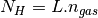

A class for defining species.
This works both ways to set and to get the value of self._abun. When passed without an argment it returns self._abun. When passed with an argument it sets the value of the argument to self._abun[0].
x = spec.abun() # return spec._abun[0]
spec.abun(0.53) # set spec._abun[0] to 0.53
Warning
Todo
see how to include the documentation of _abun with sphinx
it up and the number number of each sub-specie
Method that parses the components of species by counting the elements in each specie make sure baseSpec has the species with String in a decreasing order in length (except for the charge for example e-), i.e in this order longest string names ( CRPHOTON, PHOTON, CRP) regular elements (Na, Cl,...) elements with a single letter Upper case (H, F, C...) species denoted with lower case letters ( e-).
Returns True if the base species in specList [‘XX’,’YY’] are in self.comp ex :
print net.species[‘HCN’].hasComponents([‘H’,’N’,’C’]) print net.species[‘13C’].hasComponents([‘C’])
flag which indicates if the specie is inetialized or not
numeric representation of the specie
string representation of the specie
This class parses a reaction line read (as a string) into its components (reactants, prodcuts, temperature ranges, constants...etc..). It also provides a method to print the reaction in a pretty format.
Todo
write a method which checks if the reaction is balanced or not
ID of the reaction, read from the reaction file
lower temperature range where the reaction is valid
This is the temperature value used as a minimum for computing the reaction constant. i.e if a temperature lower than this is passed to compute the reaction constant, this self.Tlb is used instead. This is usually use by the function which computes the constant self.compute_cst_func
upper temperature range where the reaction is valid
umist error code of accuracy of the reaction constatn
same as self.complements with self appended to it
the first constant in the reaction line.
the second constant in the reaction line.
dictonary which helps decide which reaction to use when the the temperature at which the reaction constant will be computed is not withing the range defined in the reaction file. (See set_bound_rxns)
self.bouds['below']['T'] #the minimum temperature where the reaction is defined
self.bouds['below']['rxn'] #the reaction which has the constants defined for this minimum temperature
self.bouds['above']['T'] #the maximum temperature where the reaction is defined
self.bouds['above']['rxn'] #the reaction which has the constants defined for this maximum temperature
list of other reactions objects which have the same hash codes, but are have reaction constants defined over other (non-overlapping) complementary temperature ranges. If this is None, then the reaction does not have any complements.
method that computes the reaction constant using the constants from the the appropriate temperature range. The computed value is set to self.cst and to the reaction which was used to compute the constant.
| Parameters: | state (dict) – a dictionary holding all the parameters needed by the functions which compute the constants to do their job. |
|---|
computes the reaction rate from the reaction constant and the abundances of the reactants. The rate is set to self.rxn_in_trng.rate and not to self.rate
DENSITY of all the reactants. The reactants which have an abundance of None are skipped (this is useful for the reactions which have CRP, PHOTON, M and CRPHOT as reactants. So in case custom reactions are added, there is a caveat where if a reaction includes any of the 4 mentioned ‘species’ in addition to a thrid reactant the rate might be computed incorrectly. For example, a reaction like :
CO + PHOTON + XYZ -> ....
would have the rate computed as : rxn.cst * density(CO) * density(XYZ) which might not be what we want to do.
The function which computes the reaction constant. It should take as first argument a dictonary which has all the parameters it needs to compute the reaction constant.
the reaction constant computed from alpha, beta, gamma (and maybe other parameters)
display a reaction based on the input format requested.
Todo
document the parameter fmt
the third constant in the reaction line.
Returns the reaction among self or self.complements (if any) where the temperature range of the reaction is within the value (or range) passed.
returns the reaction which mateched ID. A value error is raise if it is not found. Also a vlaue error is raise if self.complement == None. It is also assumed that
Returns True if the reaction ID is the same as the input ID. and if the ID matches one of the complement reactions (if any) in self.complements.
Todo
see if using rxn.has_ID( ID_check) for the cmplements below is a good idea. Snice it might be recursive if self.complements are linked to the current reactions!!.
Returns True if self.complements is not None. Returns False if it is None
a number generated from the products and the reactants (useful to check for identical reactions efficiently)
number of the products
number of reactants
number of species involved in the reaction.
numeric error of the reaction constant
a list of strings of the products
the reaction rate computed from self.cst and the abundances (and maybe other parameters)
a list of strings of the reactants
??? (not used anywhere)
the reaction which is chosen to compute the reaction rate
set all the attributes from the string array of the reaction line
In this method, we setup a dictionary of complementaty reactions. They keys of the dictonary are ‘below’ and ‘above’. Those point to the reaction objects which are used when the temperature is above or below the gloab ranges where the reactions are defined: For example, if a reaction with ranges [30,300] for rxn1 and [300, 1000] for rxn2, and [1000,30000] for rxn3. Then ‘above’ would be rxn3 and below would be rxn1. Such that the rates of those are used whenever the temperature range is not withing 30 and 30000.
method that computes the reaction constant.
Todo
SETS THE FUNCTION WHICH COMPUTES THE REACTION CONSTANT FROM A FUNCTION NAME DICTIONARY
Warning
not implmented yet.
a dictionary whose keys are the reactants and the products.
a string indicating the literature source of the reaction.
NA
The string representation of the reaction
umist (or customly defined ) string indicating the type of the reaction.
if CUSTOM reactions are added to the reaction file, sometimes the type of the reaction is missing. Here, the type of the reaction is set based on what is in the reactants. It is set to CP is it is a CRP reaction, CR is it is a CRPHOT reaction and to PH if it is a PHOTO reaction. otherwise, it is set to NB indicating a two or three body reaction
If a specie ‘XXX’ is not in self.speciesRemoved and self.species[‘XXX’].num = None then the reactions which have ‘XXX’ as a specie are still in the network but they are not used in computing the reaction, like for example PHOTON, it does not have an abundance and we do not keep track of the number of photons, so it need not have a number with which its abudnance can be tracked in self.abun[]
Reaction hash codes are set based on the original numbers assigned to species and it doesnt depend on the order the reactnats or the products appear in the reaction input file. When computing the hash code, the species are picked in the increasing order as they appeat in the sorted string array (using the sorted function).
The reaction types supported are those of UMIST2006. They are only used when computing the reaction constants and rates. When a UMIST99 reaction network file is provided, they are assigned types bases on the reaction ID.
Warning
The user might need to check the method self.convert_rxn_line_from_U99_to_U06_format_str to make sure it is done correctly in case the reaction file is customised.
The types of reaction and their abbreviations are listed in Table-7 of the UMIST2006 paper.
Todo
Write a method which merges reactions with the same hashcode into one reaction where in different temperature ranges different temperatures are set.
Todo
Write a method which checks if the reactions are balanced or not.
Todo
Write a method which reads the abundances and sets the abundance of each specie object this can be implemented by appending a new abudance column to species.inp.
Todo
Write a method which takes as input the species file used and filters out all the reaction which do not contain these species and re-numbers the species in the number representation of the chemical network.
Todo
As a check, dump the remainders of the parsed strings to a file...it should mainly be black other than commas...etc...otherwise, there are stuff not taken into account, this can be done by erasing stuff from self.fileStr after the whole original network has been worked out.
visual extinction
FUV fux in terms of G0
constant related to PAH (check exactly what this is)
gas temperature.
temperature of the dust
a numpy array of shape (nSpecies, 1), it is by default initialized to -1.
Albedo
Assing the self.species[:].num to their index in the dictionary and update these indecis in the chemical network as well.
Warning
it might happen that by mistake some species number is not specified in the input file containing the new number, so it will be None. Or that the file contains a species that is not in the chemical network, these will also have None as numbers.
a list of the species of the base objects.
13CO self sheilding coeffcieint
CO self sheilding coefficient
H2 self sheilding coefficient
Checks the types of the reactions and raises an error if a reaction without a type is detected. This should be called before trying to compute constants.
compute the reaction constant by passing the parameters to the assigned functions.
Note
in computing rates and constants, it is advised to use reaction.rxn_in_trng to avoid confusion with other reactions which might be defined over different temperature ranges.
Compute the reaction rates assuming all the abundances are set and the reaction constants are already computed.
Converts a umist99 reaction string line to one as it would be formatted in the umist06 database. Reactions withs IDs >= 4108 and <= 4113 are assigned the type SU short for Sundries.
path of the ascii file from which the reactions of the network were read.
Method that returns the IDs [not the indicies] (as a numpy int32 array) of the reactions containing certain reactants or products or both. Either one of those two keywords should be provided. The matching is done using &&, so all the entries must be present in the reaction.
| Parameters: |
|
|---|
for example:
#filter with prodcuts only
inds = filter_reactions(withProds = 'H2')
#filter with reactants only
inds = filter_reactions(withReacts = ['H','CN-'])
#filter with some reactants and products
inds = filter_reactions(withReacts = ['H','CN-'], withProds = ['HCN','e-'])
#filter with some reactants and products
inds = filter_reactions(withReacts = ['H','CN-'], withProds = ['HCN','e-'], show = True)
#filter with some reactants and products
inds = filter_reactions(withReacts = ['H','CN-'], withProds = ['HCN','e-'],
show = True, format = 'type rxn')
Finds identical reactions which have the same reactants and the same products and returns a tuple holding the reaction indecis ( (ind1,ind2), (ind1,ind2)...).
returns a subset of the self.reactions give the IDs we want to retreive.
| Parameters: | IDs (int|list) – an integer or a list of integer of the IDs. |
|---|
Returns a dict holding the type and the counts of the available reactions types in the network
Construct the the speices dict for all the species in the network self.species also here all the unique species in the network are put in that dictionary and the components of the species are also extracted
this method can be used to get the attribute of a reaction give its ID.
Mapping the species objects in all the reactions to the species object list in the network object (this object)...this is useful since instead of having a copy of a species which might occure in many reaction, it is just referenced to the species in the species list it is also useful since changin an attirbute of a species in the list would be visible to all the occurances in the network. such as... setting the number_tag of the species objects in the reaction objects such that it would be possible to construct the numeric representation of the reactions, i.e instead of having :
HCN + H -> HNC + H
we get
‘56’ + ‘9’ -> 27 + ‘9’
assuming HCN, HNC and H have indicies 56, 27 and 9 respectively and this number would be visible to all the instances where these species occure.
Warning
This should be called everytime an entry in self.species is replaced (i.e it addrress changes) for ex by call.
Warning
It is highly recommended to use the specie.abun(x) method to set the abun of a species. Since it is easy to get confused and set the abundance via specie._abun = x which would break the mapping with net.abun. The way to change the abundance without breaking the mapping would be to use specie.abun[0] = x, since specie._abun is an ndarray of shape (1,) and setting the value via specie._abun = x would assign a new object instead of a new value.
Map self.species[]._abun to self.abun, so that changing the abundace of the element ‘X’ in self.species[] would change the value in self.abun[self.specie[‘X’].num] and vise versa.
Warning
species which do not have a number, get their abundance set to None. i.e they are not mapped.
All reactions with the same hash code are set as complements by filling in the reaction IDs in reaction.complements and are popped from the self.reactions list.
metallcitiy of the gas
density of the ambient hydrogen gas.
number of reactions merged
number of reactions in the network.
number of reactions removed from the originally read network.
number of active species in the network.
number of non active species in the network.
define rxn object list for all the reaction from the ascii database lines here the reactant and product objects are not set.
pops and returns a reaction from self.reactions give the ID of the reaction want to pop and retreive.
| Parameters: | ID_pop (int) – an integer or a list of integer of the IDs to be poped. |
|---|---|
| Raise : | Raise a value Error when a reaction is not ID is not found. |
Note
this does not check for the complement reactions.
same as self.pop_reaction, but the argument can be a list of IDs. For each entry in the argument list self.pop_reaction is called.
| Raise : | Raise a value Error when a reaction is not ID is not found. |
|---|
Prints reactions given their IDs [not their indicies i.e the position in the self.reactions[] list).
| Parameters: |
|---|
reaction object list in the netowrk.
a list of the reaction removed from the originally read netowrk.
Read and parses the UMIST 2006 or UMIST 99 reaction file (without the header) and assigns the variable fileStr and counts the number of reactions in the file sets : self.fileStr self.nRxn.
Remove species from the network. All reactions containing those species are moved to the self.reactionsRemoved list. Also those species are moved from self.species to self.removedSpecies list.
Replaces a reaction with ID in self.reactions with rxn
Set the abundances of the species from an ascii input file or from a numpy array.
| Parameters: |
|
|---|
Warning
since self.specie[]._abun are mapped to self.abun, in chanfing all the values of the array the method self.copy_abundances_from_array( array ) should be used, which sets the values one by one, instead of replacing self.abun with another array when self.abun = newAbun which removes the mapping.
calling the method set_bound_rxns for all the reactions in self.reactions. This sets sets the function which will be used to compute the reaction constants when the temperature range is not within the defined range
sets all the reaction (and the sub complements) constants and rates to None.
This method is used to set the properties of the environment, mainly needed to compute the reaction constants and rates.
Each reaction has 7 species max involved (UMIST). In the UMIST2006 there are ~450 species. Each specie can be represented by a 9 bit integer ( we use an unsigned integer) which can have a max value of 512. So each reaction can have a tag composed of 9*7=63 bits, which is unique as one of the involved in the reactions is. For example, the reaction :
(0) (1) (2) (3) (4) (5) (6) 286 + 221 —> 249 + 369 + 56
would have a hash code :
(512^0)*221 + (512^1)*286 + (512^3)*56 + (512^4)*249 + (512^5)*369
Method which sets the functions to all the reactions in self.reactions to the attributes reaction.compute_rxn_cst_func. (cosntants formulae copied from Meijerink and Spaans PDR code.
Most of the reaction functions are set based on the reaction.type string (except for some exceptions. such as the H2 formation on grains. In case a custom reaction is added make sure to modify this method to compute the reaction constant correctly.
The functions are defined at the end of chemicalNetwork.py
Warning
this ignores reactions with complements. So make sure to call this before calling self.merge_identical_reactions().
Note
in computing rates and constants, it is advised to use reaction.rxn_in_trng to avoid confusion with other reactions which might be defined over different temperature ranges.
this method can be used to set the attribute of a reaction give its ID.
Sort the reactions with input IDs in decreasing absolute rates.
a dictionary of the active specie object list in the network.
a dictionary of the non active species object in the network.
string of the version of UMIST used. The two supported values are ‘umist06’ and ‘umist99’.
Checks and updates the types of the reactions. Reactions whose types are not within those of UMIST2006 and are custom types for example, get their types set based on their reactants. This is done by calling the method reaction.update_type() for each reaction.
Writes a CSV file where each in each reaction the all the specie/product pairs combination is treated as a node->edge pairs. For example : the nodes->edge pairs in the reaction :
- C6H7+ + e- —-> C6H2 + H2 + H2 + H (in ascii format )
- 354 + 144 82 + 369 + 369 + 221 (in numeric format)
node, edge (list written to the CSV file
- 354,82
- 354,369
- 354,369
- 354,221
- 144,82
- 144,369
- 144,369
- 144,221
| Note : | species which have their number as None are not included, such as PHOTON, CRP... |
|---|
cosmic ray ionization rate.
compute the reaction rate due to direct cosmic rays ionization
alpha * zeta / 1.3e-17
compute the reaction rate due to cosmic ray induced photoreactions
alpha * ((T/300.0)**beta) * (gamma / ( 1.0 - albedo )) * (zeta/1.3e-17)
compute the reaction constant for reactions involving PAHs
alpha * (T/100.0)**beta * PHI_PAH * gamma
Returns the reaction constant for a 2 or 3 body reaction of the form:
alpha * (T / 300.0)**beta * exp( - gamma / T)
T = state[‘T’]
if rxn.Tlb is set, the the T used in the computation is :
T = max(state[‘T’], rxn.Tlb)
Same as compute_nbody_rxn_cst but without the 300.0 scaling temperature.
computes the photo reaction rate using the equation :
alpha * (G0/1.71) * exp(-gamma*Av)
same as compute_photo_rxn_cst but G0 is not devided by 1.71
computes the reaction rate of the formation of H2 on dust
Todo
complete the functions below
computes the reaction constants for reactions with type TR (thermonuclear)
nGas * compute_nbody_rxn_cst(rxn, state)
This class read a PDR mesh and returns an object containing all the data of that mesh.
| Parameters: |
|
|---|---|
| Returns: | mesh object |
m = mesh(path)
m.data['hdr'] # dtype defined in self.headerFormat()
m.data['hdr']['version']
m.data['hdr']['G0']
m.data['hdr']['nGas']
m.data['hdr']['gammaMech']
m.data['hdr']['nSteps']
m.data['hdr']['nSpecs']
m.data['state'] # dtype defined in self.stateFormat()
m.data['state']['gasT'] # shape = (nSteps)
m.data['state']['dustT'] # shape = (nSteps)
m.data['state']['Av'] # shape = (nSteps)
m.data['state']['abun'] # shape = (nSpecs, nSteps)
m.data['therm'] # dtype defined in self.thermoFormat()
m.data['therm']['heating']
m.data['therm']['cooling']
m.data['cooling'] # dtype defined in self.coolingFormat()
m.data['cooling']['metaStable']
m.data['cooling']['fineStructure']
m.data['cooling']['roVib']
m.data['cooling']['remainig tags in self.coolingFormat()']
m.data['heating'] # dtype defined in self.heatingFormat()
m.data['heating']['photo']
m.data['heating']['cIon']
m.data['heating']['molHydro']
m.data['heating']['remainig tags in self.heatingFormat()']
# Only for binary files with version 2 have the follwing extra data
m.data['metaStableCoolingCmponents'] # dtype defined in self.coolingFormaMetaStable()
m.data['metaStableCoolingCmponents']['C']
m.data['metaStableCoolingCmponents']['C+']
m.data['metaStableCoolingCmponents']['Fe']
m.data['metaStableCoolingCmponents']['remainig species in self.coolingFormatMetaStable()']
m.data['fineStructureCoolingComponents'] # dtype defined in self.coolingFormatFineStructure()
m.data['fineStructureCoolingComponents']['Si']['popDens']['0']
m.data['fineStructureCoolingComponents']['Si']['popDens']['1']
m.data['fineStructureCoolingComponents']['Si']['rate']['1-0']
m.data['fineStructureCoolingComponents']['remainig species in self.coolingFormatFineStructure']
m.data['selfSheilding'] # dtype defined in self.selfSheildingFormat()
m.data['selfSheilding']['H2']
m.data['selfSheilding']['CO']
m.data['selfSheilding']['13CO']
computes and returns the thickness of the slabs for this mesh using self.data.
| Warning : | do some extensive tests for this. |
|---|---|
| Warning : | the thickness of the last slab is set to be equal to the one before it. This is a good apporximation. |
does the integral sum_0^{N-1} f_i dx_i, where f_i is the quantity to be integrated upon and dx is the thickness of each slab
constructs the numpy dtype of the mesh which will be used to read the contents of the binary data fiel
define the format of fine structure cooling transitions of a certain specie.
| Parameters: | levels (list) – a list of strings for the names of the levels which can be used to access the population densities. For example : |
|---|
levels = ['0', '1', '2', '3', '3-p']
would allow for the abundances of each level to be accessed through :
['SPECIE']['popDens']['0'] # numpy.float64 array of the population density of level '0'
['SPECIE']['popDens']['1'] # numpy.float64 array of the population density of level '1'
| Parameters: | transitions (list) – a list containing the transitions. For each transitions an array is created as a dtype which can be used to access the cooling rate. For example. |
|---|
transitions = ['1-0','2-1','2-0']
would allow for the cooling rates for the transitions to be accessed through :
['SPECIE']['rate']['1-0'] # numpy.float64 array of the cooling rate for transition '1-0'
['SPECIE']['rate']['2-1'] # numpy.float64 array of the cooling rate for transition '2-1'
| Parameters: | n (numpy.int32) – the number of steps which will be the size of all the numpy.float64 arrays mentioned above |
|---|
defines the format of the contents of each specie’s fine structure cooling info
| Parameters: | nSteps (numpy.int32) – the number of steps in the mesh to be set as the size of the arrays holding the fine structure info for the cooling rate and population densitites for each transition and level respectively. |
|---|
(numpy.dtype) holds all the data of the PDR
path (py:string) of the binary file holding the data of the mesh.
returns a list of the same lenght as specsStrs containing the column densities of the species in the list specsStrs. It is assumed that self.chemNet, self.metallicity and self.data are set.
| Parameters: |
|
|---|---|
| Todo : | make use of self.compute_integrated_quantity in this method. |
Returns a list (TMean, nDenseColl, N_specLVG which are the weighted averaged temperature, number density of the collider species and the column density of speciesStr.
| Parameters: |
|
|---|---|
| Returns: | (TMean, nDenseColl, N_specLVG) TMean (flaot)
N_spcLVG (float) |
(numpy.dtype) holds the header info the PDR. This is the same as self.data['hdr']
define the format of the mesh from which the dtype is contrsucted.
| Parameters: |
|
|---|---|
| Returns: | list |
plotting the vertical lines on the gui indicating the positions in the slab used for the chemistry.
defines the format of the arrays which will hold the self sheilding data for the slabs in the mesh.
| Parameters: | nSteps (numpy.int32) – the number of steps in the mesh to be set as the size of the arrays holding the fine structure info for the cooling rate and population densitites for each transition and level respectively. |
|---|
this class generates and manipulates archives of PDR meshes.
| Parameters: |
|
|---|
The mesh database files are assumed to have the same prefix, for example, if the database file provided is foo, then this routine will assume (or write).
- foo.info, foo.db
for now the database can be stored into a single file and not split into multiple files.
the database for the meshes is constructed of two binary files:
- foo.info : holding all the information about the meshes, locations and parameters
- foo.db : holds the data for all the meshes
the info file has the following structure :
version number : int32 int32 int32
nMeshes : int32
meshes info array : meshInfoArrayFormat (see also the method) ( nMeshes, 1)
the entries of the dtype are
- mesh number ( int64 ) :
- data file index ( int64 ) : i.e in which .db file the mesh is located
- offset ( int64 ) : the offset in bytes from the beginning of the file where the mesh is located
- nSteps ( int64 ) : the number of slabs in the mesh
- nSpecs ( int64 ) : the number of species in the mesh .
the .db files have the following structure:
- mesh_1 ( mesh dtype )
- checkNum_1 ( int64 )
- mesh_2 ( mesh dtype )
- checkNum_2 ( int64 )
For a mesh number i, the checkNum_i should be the same as the i^th entry in the info array offset...i.e chechNum = infoAll[i][‘info’][2]
features:
cliking on the panel of the temperature, sets the Av and gasT to the chemical network of the self.mshTmp object (which is the same as self.chemNet). Once those are set, the reactions can be examined, for example :
ids = net.filter_reactions(withType='CP', show=True, fmt='id type rxn abg cst rate', sort = True)
TODO: modify such that it can handle models with one slab only (the surface slab). see test_writeReadArxv.py for an example
the format for the archive header from which the dtype will be constructed specifying the info and paramters for each line in the header in version 1 : the ‘info’ is defined as : (‘info’ , np.int64 , 5) in version 2 : the ‘info’ is defined as : (‘info’ , np.int64 , 6)
the format for the radex archive header from which the dtype will be constructed specifying the info and paramters for each line in the header in version 1 : the ‘info’ is defined as : (‘info’ , np.int64 , 5)
check archive integrity, this is a basic check where the information about the meshes in self.infoAll[‘info] is compared to those in self.data for each mesh.
| Note : | that this is a basic check. |
|---|---|
| Todo : | see how to implement a checksum to check for the integrity of the data. |
checks the radex db archive integrity by comparing the read parameters for each mesh (3 float 64’s before the transiotion data) which are stored into self.infoAllRadex[‘parms’] once they are read from the meshesRadex.db.specStr and compares them to the mesh parameters in self.infoAll[‘parms’].
| Todo : | see how to implement a checksum to check for the integrity of the data. |
|---|
object of class type chemicalNetwork holds info about the chemical network used
compute the 3D interpolation functions which will be used to compute the 2D grids. sets the attributes : self.grdInterp_f, self.abunGridInterp_f, self.colDensGridInterp_f
This is a utilty method (make it a private method), for populating the radex axes with the plots for the specie passed in the global parameter self.parms[‘radex’][‘specStr’]. It takes as a paremeter the mesh which will be used for doing the radex computations.
Returns a 2D array ( a numpy ndarray ) of size res[0] and res[1] (check this if it is not the reverse) which holds the interpolated vlaues of ‘quantity’ over the domain determined by ranges for a slab whose index is slabIdx for a mechanical heating zSec (in log10). ( x is the horizontal direction of the mesh, and y is the vertical).
An example would be (assuming the archive is constructed already):
f = arxv.construct3DInterpolationFunction(quantity = ['state', 'gasT'],
slabIdx = 0)
grd = arxv.computeInterpolated2DGrid(slabIdx = 0,
ranges = [[0,6],[0,6]],
res = [100,100],
zSec = -30,
fInterp = f)
import matplotlib.pyplot as plt
plt.imshow(grd, extent=(0,1,0,1), origin='lower')
plt.show()
| Parameters: |
|
|---|
Construc the database anad write the .db files. If the meshNamePrefix is not supplied all the files in dirPath are assumed to be data files and all of them are put in the database. The files with matching name prefix are looked for resusively in the ‘meshes’ directory.
same as construct3DInterpolationFunction but does it for n and G0
Warning
make sure that the G_mech for all the models is the same. Other things will not make sense, bec the models would have diffrent G_mech
Warning
make sure that the interpolated points are at the centroids of the grid points
Returns a 3D interpolation function (interpolate.LinearNDInterpolator) which can be used to compute values determined by quantity give (nGas, G0, Gmech) (in log_10). The value to be interpolated upon is determined by the parameter quantity and the slab index determined by slabIdx. For example, to construct an interpolation table for say surface temperature, this method can be invoked as :
f = arvx.construct3DInterpolationFunction( quantity = ['state', 'gasT'], slabIdx = 0 )
See computeInterpolated2DGrid for an example on how to use this interpolation function. Upon returning, this method sets the values of the attributes grid_x,y,z.
| Parameters: |
|
|---|
Todo
modify this to construct the table over a selected range of the 3D parameter space instead of using all the meshes. (optional)
Warning
this fails if all the entries in one of the dimensions have the exact same value. in that case use construct2DInterpolationFunction
runs radex on all the models in self.meshes, and computes the line info according to the parameters in self.parms[‘radex’]. Once done computing, it stores all the generated info into self.infoAllRadex and meshesRadex.
| Parameters: | writeDb (bool) – if this is set to true, self.infoAllRadex is writtent to a file self.dirPath/infoAllRadex.db.info.’specStr’ and self.meshesRadex is written to self.dirPath/meshesRadex.db.’specStr’ |
|---|
A string which holds the species name of the current radex database being used.
path to the directory which contains all the database info and data
A template method which loops over all meshes and gets/computes something from each mesh.
gets the quantity from all the meshes and returns it as a numpy array. the quantity is mandatory, but no the slabIdx.
| Parameters: | arrIdx (int) – in case the quantity pointed to is an array, arrIdx would be the index in the array we would like to retrieve. |
|---|
returns the unique section in z up to a relative difference of relDiff
Returns the data (of dtype mesh.data) of the pdr mesh in the x,y,z parmaerter coordinate lests self.grid_x, self.grid_y, self.grid_z which are closest to the input x,y,z.
Returns the index of the mesh in the x,y,z parmaerter coordinate lests self.grid_x, self.grid_y, self.grid_z which are closest to the input x,y,z.
2x2 ndmesh array object
Returns interpolated vlaues for input quantities. The input values are gas density, fuv heating and mechanical heating as numpy arrays with amuse units. These are converted to the same units as the PDR meshes. An interpolation function is constructed and the interpolation is done for a quantity pointing to the dtype of data of a mesh.
A list pointing to the quantity in the mesh.data dtype to be used for the x-axsi
same as qx but for the y axis
same as qx but for the z axis
the values for all the meshes corresponding to qx
same as qx but for the y axis
same as qx but for the z axis
holds the unique values of grid_z
A numpy ndarray of dtype arxvHdrDtype (see below) which contains the info (headers) about all the meshes each entry in this array contains two things, information about the mesh and the parameters of the mesh. For example the elements x in self.infoAll[x] has the following contents : self.infoAll[x][‘info’][0] mesh number
self.infoAll[x][‘info’][1] 0 ( for now)
self.infoAll[x][‘info’][2] offset from the start of file
self.infoAll[x][‘info’][3] number of steps in the mesh
self.infoAll[x][‘info’][4] number of species
self.infoAll[x][‘parms’][0] G0
self.infoAll[x][‘parms’][1] nGas
self.infoAll[x][‘parms’][2] gammaMech
self.infoAll[x][‘parms’][3] 0.0, NOT USED
self.infoAll[x][‘parms’][4] 0.0 NOT USED
A numpy ndarray of length self.nMeshes of dtype returned by self.arxvRadexHdrFormat which holds the number of transitions computed for the mesh it corresponds to in self.meshes and self.infoAll. A value of zero means that there were was valid output from radex. The contents of each elements in the array are (describing the dtype entries):
self.infoAllRadex[x]['info'][0] mesh number
self.infoAllRadex[x]['info'][1] number of transitions (0 => no radex data for this mesh)
self.infoAllRadex[x]['info'][2] offset from the start of file (computed and set only when the databse will be written, 0 otherwise)
self.infoAllRadex[x]['info'][3] warning code # holds radex.status after radex runs for the model
self.infoAllRadex[x]['info'][4] error code
self.infoAllRadex[x]['parms'][0] G0 (same as the entries in self.infoAll)
self.infoAllRadex[x]['parms'][1] nGas
self.infoAllRadex[x]['parms'][2] gammaMech
self.infoAllRadex[x]['parms'][3] 0.0, NOT USED
self.infoAllRadex[x]['parms'][4] 0.0 NOT USED
Note
the transitions are stored even if there are warnings when running radex. So take good care when analyzing the data. The info of this attribute is stored into infoAllRadex.db.info.(specStr). Each specie will have its own .db.info.... file and a corresponding .db.(specStr) file which will hold all the data in self.meshesRadex.
The logging object which will be used to output stuff to stdout
merges two databases into one and write the resulting db and its info file :param string newDbRunDirPath: the dir in which the new db to be added to the current db is located.
A list of all the meshes of ‘mesh’ dtypes (see mesh.py).
For a mesh of at index ‘i’ in
self.meshes[i]
The corresponding info in the header are accessed as follows :
- self.infoAll[i][‘parms’][0]) which should be the same as self.meshes[i][‘hdr’][‘G0’]
- self.infoAll[i][‘parms’][1]) which should be the same as self.meshes[i][‘hdr’][‘nGas’]
- self.infoAll[i][‘parms’][2]) which should be the same as self.meshes[i][‘hdr’][‘gammaMech’]
A list holding all the info dumped by radex for each model. Each entry in the list is an ndarray of dtype radex.radex.transitionDtype. The keys in each transition dtype are listed in radex.radex.transitions .
a mesh object which is used to store single mesh data just for plotting purposes
numpy.int32 number of database files
np.long64 : number of meshes in the database (this is now as 1x1 array, convert it just into an np.int32 scalar
method called on the event of a mouse button down in self.fig. See self.setupGui() for the layout of the window.
all the keywords used in setting up the database and running it.
a dictionary holding the parameters used in modeling the PDRs. This is read from self.dirPath/used_parms.pkl
Plots curves from the meshes in the database on top of each other in the same window. This method inherits all keword argument from pyl.plot()
| Parameters: |
|
|---|
Warning
check and test this methods and document it better.
Main method for exploring the meshes in the database.
Todo
change resGrids to a [res_x, res_y] insteads of it being just a scalar.
plots in 3D the parameters of the meshes in the database. By default the x,y,z coordinates are the log10 of nGas, G0, and gammaMech
| Parameters: |
|
|---|---|
| Returns: | (figure, axes, plt) |
the value of the section in Gmech selected
A dictionary holding the radex databases read so far. Each entry in the dictionary is a dictionary of two keys : ‘infoAll’ and ‘meshes’. For example, this could hold the databases for CO, HCN and HNC. Those can be mannualy to self.meshesRadex and self.infoAllRadex via :
#setting the CO radex database
self.meshesRadex = self.radexDbs['CO']['meshes']
self.infoAllRadex = self.radexDbs['CO']['infoAll']
#setting the HCN radex database
self.meshesRadex = self.radexDbs['HCN']['meshes']
self.infoAllRadex = self.radexDbs['HCN']['infoAll']
reads the database and assigns the appropritate attributes (document)
| Parameters: | check – if this is set (to any value) the self.checkIntegrity() is called. |
|---|
Reads the database suffixed by specStr (i.e meshesRadex.db.(specStr)and assigns the appropritate attributes (document) and assigns the read data to self.meshesRadex and self.infoAllRadex.
| Parameters: |
|---|
Warning
the keyword specStr is not functional yet.
Note
before calling this mehtod, an instance of the radex class should be assigned to self.radexObj.
Loads radex database files from disk to a dictionary. The last database loaded is the one being used.
| Parameters: | species – A string or a list of strings holding the names of the species files to be loaded. |
|---|
method that saves the emission grids computed from the PDR models (emission grids) for now into files
method that saves a grid computed from the PDR models for now into files keywords : save, grid, pdr, quantity, slab
method that saves the radex grids (emission grids) for now into files.
| Parameters: | fileFormat (string) – When this is set to ‘numpytxt’, the grid is dumped written to an ascii file using numpy.savetxt, one row on each line. When this parameter is set to ‘3column’, the coordinates of the centroid of the grid cell and the value (x_i, y_i, v_i) are written on each line. |
|---|
Assigns the values of self.grid_x,y,z from self.grid_qx,qy,qz. The values are extracted from all the meshes in the database.
| Parameters: |
|
|---|
Note
by default, the log of the quantities from the meshes are used. Only when the relative keyword is present, the value of the heating ratios is set, and NOT the log of the heating ratios.
sets up the attributes related to the chemistry assuming self.parms[‘chemistry’] is set. sets the attribute self.chemNet.
| Parameters: | parms – a dict holding the paths and definitions needed to setup the chemical network. An example of this dict : parms = {
'rxnFile' : '/home/mher/rate99Fixed.inp', # path of the reaction file
'specNumFile' : '/home/mher/species.inp', # the species in the rxnFile
'underAbunFile' : '/home/mher/underabundant.inp', # species to be excluded from the rxn file
'removeManual' : ['13CH3'], # species to be removed explicitly not in the underabundant file
'baseSpecies' : 'baseSpeciesDefault', # name of the module holding the base species
'umistVer' : 'umist99', # version of the umist database
}
|
|---|
the method which setup the layout of the gui by defining a dict holding all the object and variables related to it. Returns the dict object and make use of self.parms
sets up the logger which will prepend info about the printed stuff. Assignes a value to self.logger.
This method displays a plot (useful for standalone use) of a grid of the quantity pointed by quantity in a new window. It makes use of computeInterpolated2DGrid and construct3DInterpolationFunction. For the documentation of the parameters see computeInterpolated2DGrid
| Parameters: |
|
|---|---|
| Returns: | aaa |
shows the line intensity grid
shows the surface temperature grid
Todo
plot every other labeled contour as a tick in the colorbar
Warning
there would be a memeory leak if things are plotted over and over the images, labels..etc..must be replaced and not new instance created and overplotted...take care of that later...
A method which sets a radex database from the databases available in self.radexDbs.
np.int32 array [3] version number of the database data
a 3 element np.int32 array holding the version of the radex database currently in use.
writes the mesh.db and mesh.db.ino into the dir dirName. By default the files are written to the directorey self.dirName, unless a diffrent path is specified via the keyword dirName.
| Parameters: | dirName (string) – The directory where to write the database files. |
|---|
writes the radex meshesRadex.db and meshesRadex.db.info files. By default the files are written to the directorey self.dirName. , unless a diffrent path is specified via the keyword dirName. For each mesh, a block consists of : [log10_G0, log10_nGas, log10_gammaMech,], transitionData, filePosition....etc... if transitionData is none, then transitionData is not written in the block, but the rest of the block is written.
| Parameters: | dirName (string) – The directory where to write the database files. |
|---|
writes the guess database that is used by the pdr code. See the struct ‘database’ in oneSided/src/vars.h.
Steps involved in preparing the data before calling this method:
- collect a bunch of mesh files in simulation folder
- construct the database by running : constructReadArchive.py
- then call this method and save the file to be used later
A wrapper class which runs radex parses its output into objects. see test_radex.py and radexView.py for examples on using this class. Upon a successull executation, all the transitions are stored in self.transitions.
Todo
docment the order in which things must be called.
Warning
make sure that the lower and upper string names for the transitions are not longer than 10 character, or change the length accordinglt in self.generateTransitionDtype().
| Test : | test_radex.py, radexView.py |
|---|
dict : Flags set when running radex which can be used to examing the output. The flags are :
'DEFAULT' : Default status, should be called before each run 'ERROR' : failed 'PARMSOK' : parameters are ok 'RUNOK' : radex did all the iterations (but not NECCESARILY converged) 'SUCCESS' : succeeded with no major warning (output should make sense) 'WARNING' : success with warnings, warning are assigned to self.warnings. 'ITERWARN' : number of iterations warning
See the source for the value of each flag
nump.ndarry matplotlib.axes object : run output are plotted in these axes objects for a single model self.axs has the shape (4,). When nx is larger than 1, the shape of self.#axs is (4,nx). In other words, self.#axs is the object returned by self.fig, self.axs = pylab.subplots(4, nx )
chech whether the contents of self.inFile are within the ranges where RADEX can work.
| Raise : | exception NameException |
|---|---|
| Attention : | This method sets the value of self.status. The flag ‘PARMSOK’ is set if the paramteres are ok, ‘ERROR’ is set otherwise. |
Clears the curves in an axes column. This is usually used when radex fails and the data in a certain column need to be removed. Here it is assumes there is one column.
string : The path to the radex executable
matplotlib.figure object : when set, the output is plotted in this figure
removes colliders from the dictionary of the self.#inFile if their density is less than the minimum accepted value by RADEX (for now, this ie 1e-3 cm^{-3} )
Generates the parameter file contents from self.inFile, which can be passed to the radex executable, as a string.
| Returns: | (str) |
|---|
generates the trasition dtype which will be used in assigning the transition info in self.transitionsNdArry.
returns a parameter from self.inFile given the key in the dict as the argument ‘parm’ which is a string used to extract the vlaue from the dict.
This method can be used to extract individual transition information from the self.#transitions list. For example, for CO, getTransition(0) would return the transition info for the 1-0 transition
| Parameters: | idx (int32) – The index of the transition in the transition list. must be between 0 and len(self.#transitions) |
|---|---|
| Returns: | dict transitions item |
dict : dictionary holding all the input parameters. It is used to construct the input parameter file that is piped to the radex executable. It should be of the form.
All of the items in this dict correspond to the same parameters in radex except: ‘collisionPartners’ and ‘nDensCollisionPartners’, ‘molDataDir’ and ‘specStr’. ‘collisionPartners’ is a list of strings of species such as ‘H2’, or ‘H’ :
'collisionPartners' : ['H2']
or
'collisionPartners' : ['H2','H+','e-']
‘nDensCollisionPartners’ should be a list of the same length holding the number density of each collision partner respectively. For example :
'nDensCollisionPartners' : [1e3]
or
'nDensCollisionPartners' : [1e3, 1e1, 1e-2]
the parameter molData in the input parameter file is constructed by appending the value of ‘specStr’ to self.molDataDir
string : Path to the directory containing the transition data for the species
(see radex.py for an example) :
SPECIE_STRING : FILENAME
1 2 3 4 5 6 7 8 9 10 11 | self.molDataFiles = { 'CO' : 'co.dat' ,
'13CO' : '13co.dat' ,
'HCO+' : 'hco+@xpol.dat',
'HCN' : 'hcn.dat' ,
'HNC' : 'hnc.dat' ,
'CS' : 'cs@xpol.dat' ,
'C' : 'catom.dat' ,
'C+' : 'c+.dat' ,
'O' : 'oatom.dat' ,
'SiO' : 'sio.dat' ,
'CN' : 'cn.dat' }
|
Todo
implement a method to generate this dict automatically from all the files in the directory molDataFiles.
Todo
also implement a dict for the collision partners like ‘e-‘ : ‘e’, but it might not be necessary since RADEX takes both ‘e’ and ‘e-‘
integer : number of collision partners. This is the length of the list self.inFile[‘collisionPartners’]
integer : number of iterations used when the run finishes.
the number of transitions
integer : number of models to run and plot
integer : number of horizontal division in the figure (default)
string : the header of the raw output. This is useful for inspecting wheather the input parameters were constructed properly.
Once radex exectues and dumps transition information, this method is used to extract the line data.
| Returns: | None. The instance variable self.transitions is set. |
|---|
Note
containing the units:
“(K) (GHz) ...”
and
“Another calculation”
thisway, we can get the number of transitions (the number of new lines, the work on parsing the data without the need to append anythign to a list..just preallocate the dtype and fill in the values.
prints in a pretty way all the flags (whether they are set or not) in self.status
subproccess.popen object : Object used to communicate with the executable
string : the output of the run which would be dumped by RADEX when ran standalone
Run the radex executable.
| Parameters: |
|
|---|---|
| Returns: | (int) status. Upon a successful run, ‘RUNOK’ and ‘SUCCESS’ flags are set. If the number of iterations excceeds 10,000 ‘RUNOK’, ‘WARNING’ and ‘ITERWARN’ flags are set. if the ‘PARMSOK’ is true rawOutput and transitions are set, otherwise they remaine None. |
Todo
extract other warnings also, not just the one due to the max iterations.
Warning
when running the same radex instance multiple times, make sure to set the status to the default before calling run using setDefaultStatus().
sets the default status and self.transitions, self.rawOutput and self.nTransitions to None
This method sets values to the parameters to be passed to radex.
| Parameters: |
|---|
sets up the logger which will prepend info about the printed stuff. Assignes a value to self.logger.
intger : the default stauts set from self.FLAGS. The flags are set in a bitwise fashion. To check if a flag is set, it can be done in the following way :
stt = self.getStatus() & self.FLAGS['FLAG']
if the flag is set stt would be a number greater than 0, zero otherwise (for more details on the values of the flags, see radex.py)
holds the numpy.dtype of the transitions. See self.generateTransitionDtype().
'upper' : string # the upper level of the transition
'lower' : string # the lower level of the transition
'E_up' : numpy.float64 # Enery of the upper level
'Tex' : numpy.float64 # computed excitation temperatur
'tau' : numpy.float64 # computed optical depth
'T_R' : numpy.float64 # computed rotational temperature
'pop_up' : numpy.float64 # computed population density in the upper level
'pop_down' : numpy.float64 # computed population density in the lower level
'fluxKkms' : numpy.float64 # computed flux in $K.km^{-1}.s^{-1}$
'fluxcgs' : numpy.float64 # computed flux in cgs
list of strings : A list of strings containing the dumped by radex, if any. If there are any warnings, the appropriate flag is set in self.#FLAGS
This is a class which provides an interface to the LAMDA database. The files in the LAMBDA database are parsed into a dictioary of strings (for the names of the species) and numpy dtypes for the numerical values such as the rates coefficients. The parsing is done based on the fields which specify the content of the following data. For example, first we look for the string ‘MOLECULE’ and extract its name form the following line since that is how the files are constructed. It is not such a straight forward task since sonetimes feilds which contain information also contain descriptive texts. For example the feild holding the name of the H20 molecule also has :
p-H2O spectroscopy from JPL ...
The input units of the energy levels in the levels section is assumed to be in cm^-1 (which is the case in all the files of the current version of the database).
It is assumed that the energy units read in the transitions (both radiative and collisional are in K.
Creating an instance in the following way :
reader = molData.reader(dirPath = '/home/mher/lambdaPath/')
reads all the files with a .dat extention, parses them and stores the parsed data in the attribute speciesInfo.
The method get_specie can be used get the info for a cartain specie. Each files is parsed into a dictionary with the following keys:
| Warning : | the quantum number reading is ignored for now. |
|---|---|
| Test : | Below are a few file which can be used as templates to read and use the data:
|
specDict = ['path'] #full path of the file
['specStr'] #the string of the specie
['info'] #the raw content of the string name feild (useful for extra checks)
['weight'] #atomic weight
['nlevels'] #number of levels
['levels'][0] #an ndarray of dtypes holding info for each level
[1] #see the method *cleanSpecDict* for details of each key in the dtyp
. #the keys of the dtype are : 'n', 'E', 'g', 'qn'
.
[nlevels-1]
['nTransRad'] # number of radiative transitions
['transRad'][0] # an ndarray of dtypes holding the info of all the
[1] # radiative transitions. see the method *cleanSpecDict*
. # for details of each key in the dtyp
. # the keys of the dtype are : 'n', 'u', 'l', 'A', 'nu', 'E'
[nTransRad-1]
['transColl']['nPartners'] # number of collisional partners
['partnersList'][0] # a list of the collision partners (the raw content
[1] # of the collsion partner list, same as 'info'
. # for each below)
[nPartners-1]
['partner0']['nTrans'] # number of collisional transitions
. ['info'] # the raw content of the collion partner feild (useful for extra checks)
. ['nTemps'] # number of temperatures in the collisions table
. ['temps'] # the temperatures values for which the rate coefficient are tabulated
. ['table'][0] #each line is the (split) raw data (as strings) of each transition read
. [1] # from the file
. .
. .
. [nTrans-1]
. ['trans'][0] #an ndarray holding the info of the collisional transitions with this
. [1] #partner. The keys of the dtype are : 'n', 'u', 'l', 'rc'
. . #'rc' is an interpolation function which given a temperature returns
. . #the rate coefficient.
. [nTrans-1]
['partner1']['nTrans']
. ['info']
. ['nTemps']
. ['temps']
. ['table'][0]
. [1]
. .
. .
. [nTrans-1]
.
.
['partner(nPartners-1)']
The collision partners in the data files are the same as those mentioned in the documentation of Radex (mention the link to Floris’s page)
partnerTypeDict = {'1': 'H2',
'2': 'p-H2',
'3': 'o-H2',
'4': 'e-',
'5':'H',
'6':'He',
'7':'H+'}
Todo
use a literal include to include this from the method self.parseDtaFile().
An example for getting a rate coefficient. Once the reader has been invoked, we can use the get_specie method to extract a certain specie info. Lets say we want the rate coefficient for the para-H2O molecule.
pNH3 = reader.get_specie(specStr = 'NH3', inInfo = 'p-')
this retuns the species infor for para NH3. For H2O for example, it is better to provide the inPath parameter to decide which information to return based on the filename holding the data, since there are may o- and p- files in the current database.
Note
see www.sron.rug.nl/~vdtak/radex/index.shtml#moldata for the format of the data ascii files.
Todo
add a method to return the index of a level given the quantum numbers
Todo
add another method which feches the transition info give the upper and lower levels (all transitions -rad-col..etc..)
Todo
add a method which dumps the graphvis stuff for the transitions (radiative, coll...)
Todo
add a method which clears memory and check for memory leaks
Todo
see what it is about the differences in the computed and tabulated deltaEs and energy levels
Todo
collect the filenames only by doing one pass over all the files and compiling a dictionary for the species and different versions of the files. Also write a routine which writes all the info of the read files.
Warning
in the online data there are few mistakes (not sure if they were corrected):
in hcl@hfs.dat : the number of collisional transitions should be 378
the files : c-h2.dat, c+-h2.dat, hcl.dat, old-hc3n.dat, o-h2.dat, old-hnco.dat are missing the numerical code of the colliders. For example :
C + o-H2 ! K. Schroeder et al. 1991, J. Phys. B, 24, 2487
should be replaced by :
3 C + o-H2 ! K. Schroeder et al. 1991, J. Phys. B, 24, 2487
in p-nh3.dat : the code for the collision partner for p-H2 is set as 1, it should be 2
1 p-NH3 on p-H2: Danby et al 1988, MNRAS 235, 229
should be:
2 p-NH3 on p-H2: Danby et al 1988, MNRAS 235, 229
takes the output item of parseDataFile and defines dtypes which hold the info about the levels and the transitions. This method does the following modification to specDict:
- specDict[‘levels’] : is replaced by a numpy dtype : ‘n’, ‘E’, ‘g’, ‘qn’.
- specDict[‘transRad’] : is replaced by a numpy dtype : ‘n’, ‘u’, ‘l’, ‘A’, ‘nu’, ‘E’.
- specDict[‘transColl’][‘partnerX’] : each collision partner X will have a new dict key [‘trans’] which is a dtype with keys ‘n’, ‘u’, ‘l’, ‘rc’. ‘rc’ is an interpolation function which take temperature as an argument and returns the rate coefficient for that temperature.
- in the above : ‘n’ is a transition index.
- [‘levels’], [‘transRad’], [‘transColl’][‘partnerX’][‘dtype’] are ndarrays one entry for each level/transition.
Retrieves parsed and cleaned data from the leiden lambda database file in self.dirPath. The parsed data which are dicts (see output of self.cleanSpecDict) are appended to self.spceciesInfo.
| Parameters: | specie (string) – if this keyword is set, only file whose specie matches it are parsed. Otherwise all the files are parsed. |
|---|
The path of the directory holding all the information about all the species
This method can be used to return the data for a certain specie one the data has been read. None of the keywords are mandatory. But at least one should be present. The checks are done using the ‘AND’ logic. Note that all the matches are returned. So a tuple of matches might be returned.
co_data = reader.get_specie( specStr = 'CO', inPath = 'xpol_new' )
this call returns the data about CO which is in the file co@xpol_new.dat
| Parameters: |
|
|---|
Extracts the name of the specie from the token. In the current version of the database, the specie names also contain some text sometime like references and details about the specie. The specie name is in most cases the first item on the line after !MOLECULE, except for H20 where whenever H20 is found in the string the specie name is taken to be the second word in the string.
| Returns: | (specieName, info). Where info is some description in the string feild if any. |
|---|---|
| Todo : | add a method which converts the string name to one which is compatible with the specie class. |
A list of strings holding the names of the files to be ignored. Those files are old ones which are not combatible with the current parser of this class.
Parses the data file into its components and returns them as a nested dict object. The keys of the dict are :
| Returns: | (dict) specDict |
|---|
specDict = ['path']
['specStr']
['specInfo']
['weight']
['nlevels']
['levels']
['nTransRad']
['transRad']
['transColl']['nPartners']
['partnersList']
['first']['nTrans']
['info'] #todo: not implemented
['nTemps']
['temps']
['table']
['second']['nTrans']
['info'] #todo: not implemented
['nTemps']
['temps']
['table']
.
.
.
etc
For each path in self.dataFiles read the header, the ”!MOLECULE” section, And return a list for those headers. This method is implemented mainly to optimize not reading all the data of all the files. Thus just by reading the header and getting the name of the species, using the keyword ‘specie’ while initializing the reader can be used to read the full data and parse and clean the data of the spceis matching the onse in the headers.
A list which will hold all the names of the species extracted from the headers of the files in self.datafiles
A tuple of dicts objects. Each dict object holds all the info read from a file.
A class which has all the keys and numpy dtype of the specInfo parsed by molData.reader.cleanSpecDict as attributes. Takes as an argument the specInfo specDict and returns a class which has the main keys as attributes. Also defines some utility methods which compute things related to the species.
computes the cricical density (n_crit = A/K) of a transition given the cleaned output of reader (see also reader.get_specie). The inputs are the upper and lower levels corresponding to specInfo[‘levels’] and the kinetic temperature at which the collisional coefficient will be computed. Also it is required to specify the collider specie as a string. See documentation of reader for the supported colliders.
setus up the linear system for the radiative and collisional transitions.
Warning
need to copy things from test_leidenLambda_testCase.py
solves the equilibrium state of the population densities.
Warning
need to copy things from test_leidenLambda_testCase.py
Solves the time evolution of the population densities.
Warning
need to copy things from test_leidenLambda_testCase.py
convert the input visual extinction value to the length in cm (L) of the the NH column (not the actual column density) this is the inverse of Eq-4 in paper01 where 
| Parameters: |
|
|---|
convert the column density to visual extinction value in Av. This is Eq-4 in paper01 implemented in fucntion LengthToAv
| Parameters: |
|
|---|
given the Av of the sub-slabs of a plane parallel model, it computes the thickness of each sub-slab of the descretized model. All the parameters are of the same type as AvToLength except for :
| Parameters: | slabsAv (numpy.ndarry([], dtype = numpy.float64)) – An array holding the Av (in mag units) for the staring positions of the sub-slabs. |
|---|---|
| Returns: | The thickness of each slab in cm |
| Return type: | numpy.ndarry([], dtype = numpy.float64) |
computes the planck function for input parameters. :keywords: beta, nu,
Defines the elements and basic species from which all the other species are made. Returns a list of specie objects which define each specie. This is just a sample file, similar files can be defined and imported into scripts, or the specie definition of this file can be modified.
baseSpecs = baseSpecies.baseSpecies()
"""
specList = [ specie('CRPHOT', specType = -1, charge=0 , init=1),
specie('PHOTON', specType = -1, charge=0 , init=1),
specie('CRP' , specType = -1, charge=0 , init=1),
specie('PAH' , specType = 0 , charge=0 , init=1),
specie('H2V' , specType = 0 , charge=0 , init=1, comp = [ ['H',2] ]),
specie('13C' , specType = 0 , charge=0 , init=1),
specie('Na' , specType = 0 , charge=0 , init=1),
specie('Mg' , specType = 0 , charge=0 , init=1),
specie('Si' , specType = 0 , charge=0 , init=1),
specie('Cl' , specType = 0 , charge=0 , init=1),
specie('Fe' , specType = 0 , charge=0 , init=1),
specie('He' , specType = 0 , charge=0 , init=1),
specie('H' , specType = 0 , charge=0 , init=1),
specie('M' , specType = -1, charge=0 , init=1),
specie('C' , specType = 0 , charge=0 , init=1),
specie('N' , specType = 0 , charge=0 , init=1),
specie('O' , specType = 0 , charge=0 , init=1),
specie('P' , specType = 0 , charge=0 , init=1),
these can be included in a script as :
from baseSpeciesDefault import baseSpecies
baseSpecs = baseSpecies.baseSpecies()